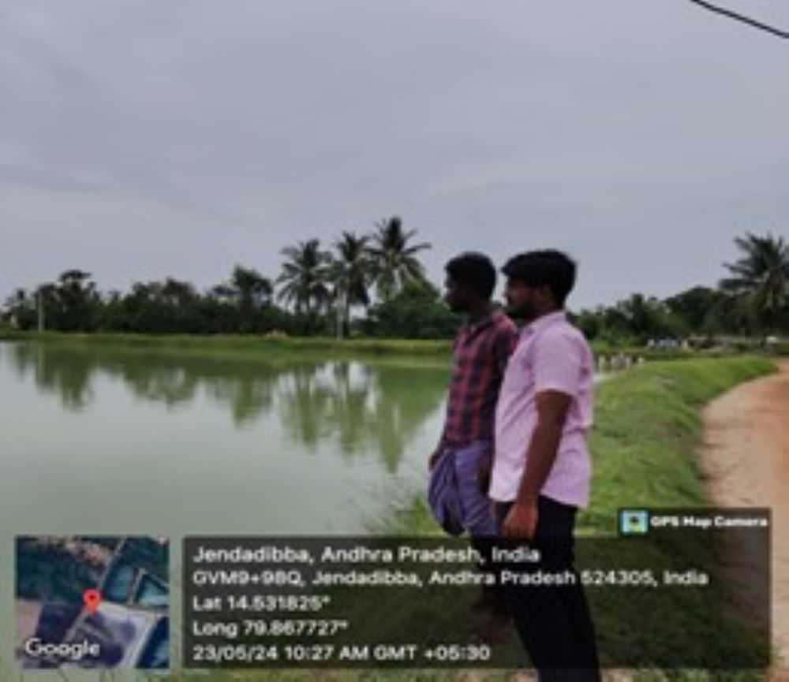

WEEKLY REPORT
WEEK- 2 (From 20-05-24 to 25-05-24)
Objective of the Activity Done: Did a Analysis of shrimp farming in aqua culture and conducted a survey on shrimp farming.
Detailed Report:
Day 1:
- I learnt that, in aqua farming there are different types of aquatic creatures to cultivate.
Day 2:
- I selected shrimp farming in aquaculture and follow up to gain knowledge on shrimp farming.
Day 3:
- I done a research on shrimp farming and analyse the procedure of cultivation of shrimp .And gain some knowledge on variants of shrimp.
Day 4:
- I interact with shrimp farmers to know about the shrimp farming and got to know which variant is best among shrimp variants.
Day 5:
- I learnt about how to select the right shrimp to cultivate based on the economic and nature factors.
Day 6:
- Conducted a survey on variants of shrimp ,cultivating in that area .
